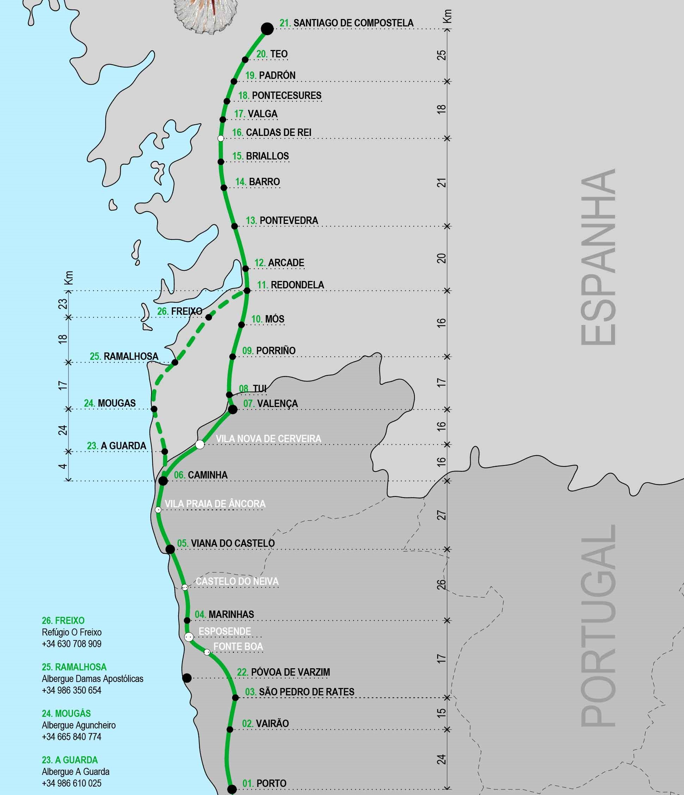

Caminhos de Santiago


A maioria deste caminho é feito em passadiços de madeira mesmo à beira do mar, e o caminho é quase sempre
mesmo junto à costa até chegarmos a Redondela, perto de Pontevedra, onde encontramos o caminho central. Isto é um aspecto positivo, porque ao
contrário do caminho central, não há tantas subidas e descidas como estamos sempre na costa
e não a passar por montanhas e vales.
Existem vários albergues, parques de campismo e alojamentos locais perto das cidades costais por onde vamos passando,
o que é bom para aproveitar a praia no fim de um dia a caminhar, em que temos os pés a latejar e por vezes
até em ferida.
Como tencionava realizar o caminho em menos de 10 dias, decidimos partir de A-Ver-O-Mar de modo a consguirmos chegar
a Santiago de Compostela em 9 dias, caso corresse tudo como planeado.


Chegada a Santiago por volta das 12:00, almoçamos e aproveitamos o dia passeando pela cidade antes de regressar a casa de camioneta.